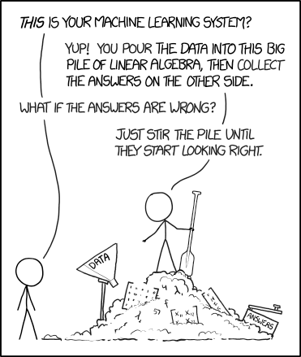
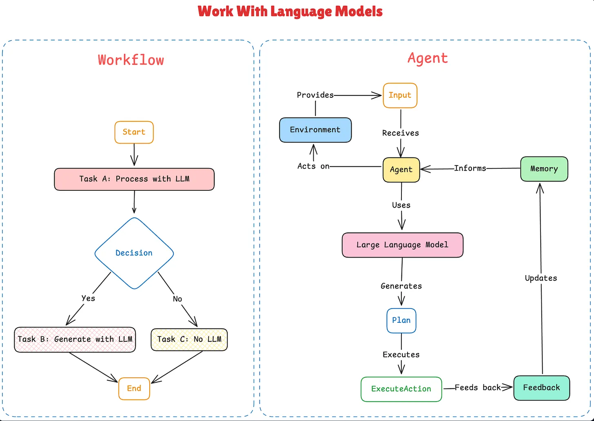
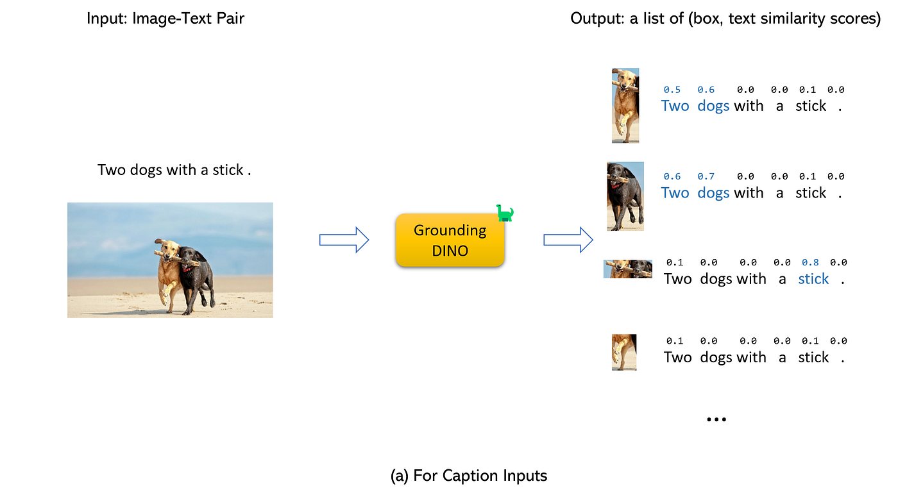
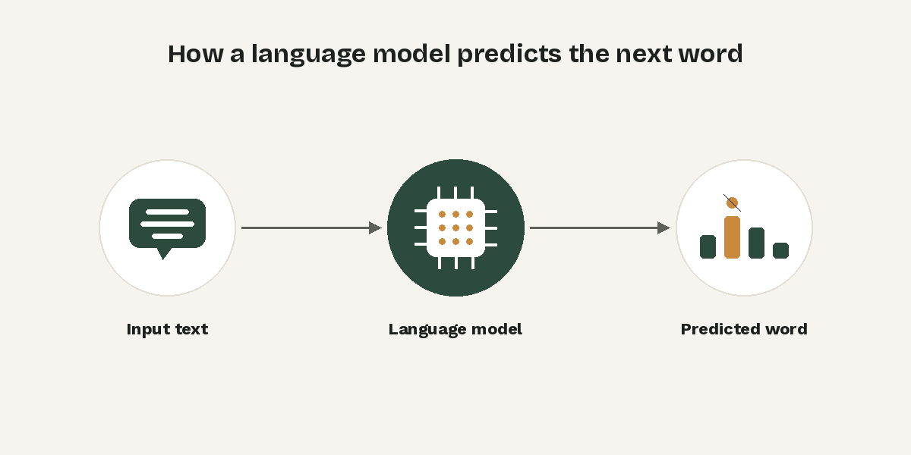
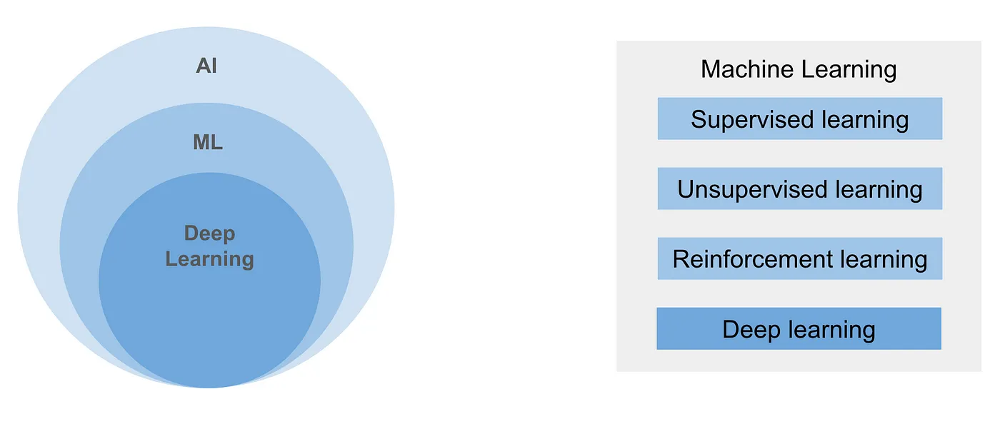
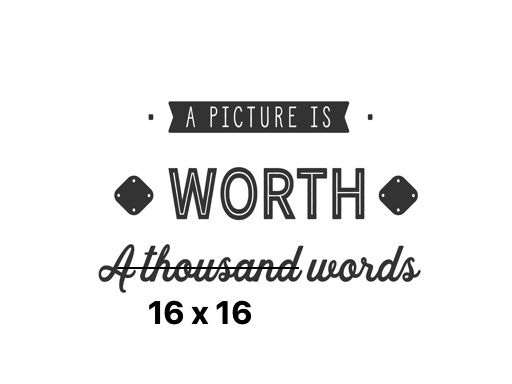
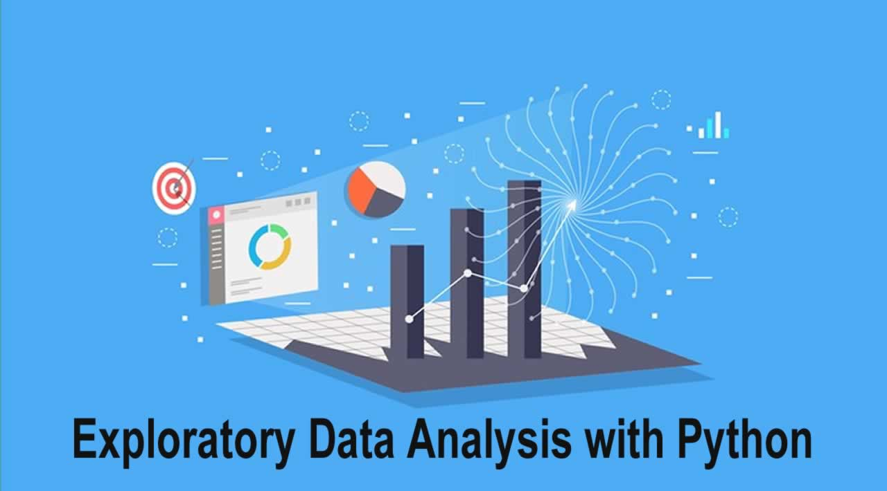

I'm Tauseef — I build and write about applied AI.
Mostly notes on what I have been learning and building — computer vision, language models, and whatever I get curious about next.
A few things about me
A few interesting things about me. I love to learn, build and innovate with AI. Every day I push myself to learn something new, whether that be about AI, machine learning or data. When I am not learning about AI, I travel and follow my favorite soccer club Arsenal.

Source: xkcd.com
Things I have written
Explainers and deep dives from things I have been learning.

AI Agents Explained
What actually separates an AI workflow from an AI agent: who controls the flow, the spectrum of patterns in between, and how to keep agents safe with tight permissions and human checkpoints.
Read the piece →Retrieval Augmented Generation
Exploring what RAG is, how it improves AI capabilities, when to use RAG over fine-tuning, and why it's a key technique for building powerful and accurate language models.
Read the piece →
Grounding DINO
Most object detection models are trained on a fixed set of classes. Grounding DINO detects arbitrary objects specified by human language input, without retraining the model — zero-shot detection.
Read the piece →
LLMs Demystified
A beginner's guide to understanding Large Language Models — what they are, how they're built on transformer architecture, and the three types of LLMs you'll encounter, from base models to the chatbots you use every day.
Read the piece →Prompt Engineering
The basics of prompt engineering — developing and optimizing prompts to efficiently use LLMs — along with the popular techniques researchers and developers use.
Read the piece →
Generative AI
Generative AI can seem complex but it doesn't have to be — breaking it down into simple terms for anyone, regardless of technical background.
Read the piece →
Vision Transformers
A deep dive into Vision Transformers (ViTs), the approach reshaping computer vision, explaining the steps involved in an object classification task using ViTs.
Read the piece →
Exploratory Data Analysis
Exploring the annual income dataset (UCI Machine Learning Repository) across 41 employment and demographic attributes to understand what affects individuals' income threshold level.
Read the piece →Say hello
Always happy to talk AI, a project you're thinking through, or Arsenal's latest way of making a lead interesting.